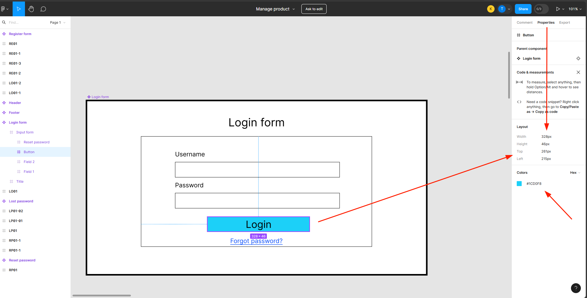

UI testing is a type of software testing that focuses on the graphical user interface (GUI) of an application. It involves verifying that the UI behaves as expected under various conditions and that it meets the design specifications.
This lesson introduces the different types of design files used in the real projects and how to use them
This lesson will show you how to inspect elements on websites and how to use it for UI testing
This lesson will introduce you to how to test the responsiveness of a website.
This lesson will introduce you to how to interfere the data to test the website with the complex data.
In this lesson, you will learn about the different types of design files used in the real projects and how to use them.
There are several types of design files used in the real projects. The most common types are:
In the above design files, you can check the exactly size, color, and other properties of the elements.
Figma is a cloud-based design tool that is widely used for UI design. It allows you to create and collaborate on designs in real-time.
Sample design file: Figma link (You need to login to your Figma/Google account to access developer mode)
As you can see in the below image:
Usually, you will get the design file from the designer, and you only have view permission only. The designer can share the link with option
As a tester, you should know the below features of the Figma to make your work easier.
In the Figma, you just to need to left click the element to inspect it. And you can see the properties of the element in the property tab on the right.
The easiest way to copy the text from design is to use the
cmd + c or ctrl + c shortcut.
However, sometimes the text layer is after many layers, and you need
to select the correct text layer to copy the text. To do that, you
need to take a look to layer type on the left side of Figma. The
text layer will have the T icon.
To find the distance between two elements, you can use click on the first element, then hold the Shift key and hover to the second element that you want to find the distance.
In the Figma, you cannot use the cmd + f or
ctrl + f shortcut to find the text in whole page. The
only way to find the text in whole page is to use the extension from
Figma.
PSD is a file format used for Adobe Photoshop. It is used to create and edit images.
Adobe XD is a design tool that is used to create and edit UI designs. It is used to create and edit UI designs.
In this lesson, you will learn how to inspect elements on websites and how to use it for UI testing.
So, you already know how to inspect elements from the design files, you will get the expected result. Now, you need to inspect elements on the websites, to get the actual result.
In this course, we will use the Chrome DevTools to inspect elements on the websites.
You can open this sample login page: Login page
To open the Chrome DevTools, you need to right click on the page and
select Inspect.
After that, you can see the elements on the website and the properties of the elements.
In this lesson, you will learn how to test the responsiveness of a website.
In this lesson, you will learn how to interfere the data to test the website with the complex data.